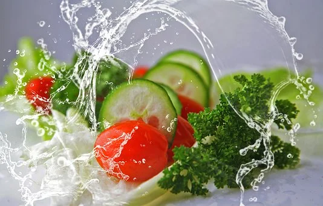

Amanides...

Plats...
| PER PICAR | PREU |
|---|---|
| Patates amb salsa brava. | 5'50€ |
| Mix de pernil i formatge amb coca de vidre amb tomàquet. | 7'50€ |
| Assortit de croquetes (porquet amb poma, bolets i bullit). | 6'00€ |
| Nachos amb guacamole, salsa agra,carn i formatge cheddar. | 6'90€ |
| Seitons en vinagre. | 7'00€ |
| AMANIDES PER COMPARTIR | PREU |
|---|---|
| Amanida amb formatge de cabra al forn caramel·litzada (panses, nous, maduixes, ceba cruixient, tomàquet i vinagreta de mel i mostassa). | 8'50€ |
| Amanida capresse (tomàquet, motzzarella, alvocat i salsa pesto). | 8'50€ |
| Pebrots del piquillo amb tonyina i balsàmic de mòdena. | 7'50€ |
| Amanida de l'horta (enciam , tomàquet, pastanaga i ceba). | 7'00€ |
| PLATS | PREU |
|---|---|
| Botifarra sobre patata fornera amb ceba caramel·litzada. | 8'50€ |
| Secret ibèric a la planxa. | 8'50€ |
| Fingers de pollastre amb patates fregides acompanyat de salses. | 8'50€ |
| Hamburguesa Big (hamburguesa amb carn mixta, enciam, tomàquet, mostassa, ketchup i maionesa). | 8'50€ |
| Juliana de patates amb ous estrellats i pernil. | 7'50€ |
| Pasta amb salsa carbonara / bolonyesa. | 7'00€ |
| Plat combinat de llom / pollastre (ou, patates fregides o amanida). | 8'50€ |
| TORRADES | PREU |
|---|---|
| Torrada de pernil salat amb rodanxes de tomàquet, mostassa i mel. | 6'50€ |
| Torrada de sobrassada amb formatge brie i mel. | 6'50€ |
| Torrada de l'horta amb alvocat, llavors de sèsam, melmelada de tomaquet i ous remenat. | 6'50€ |